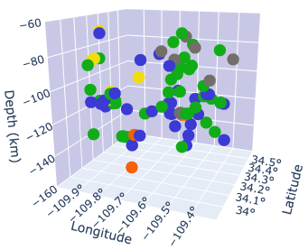
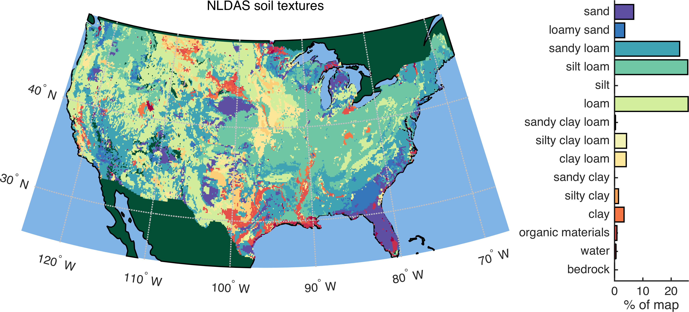
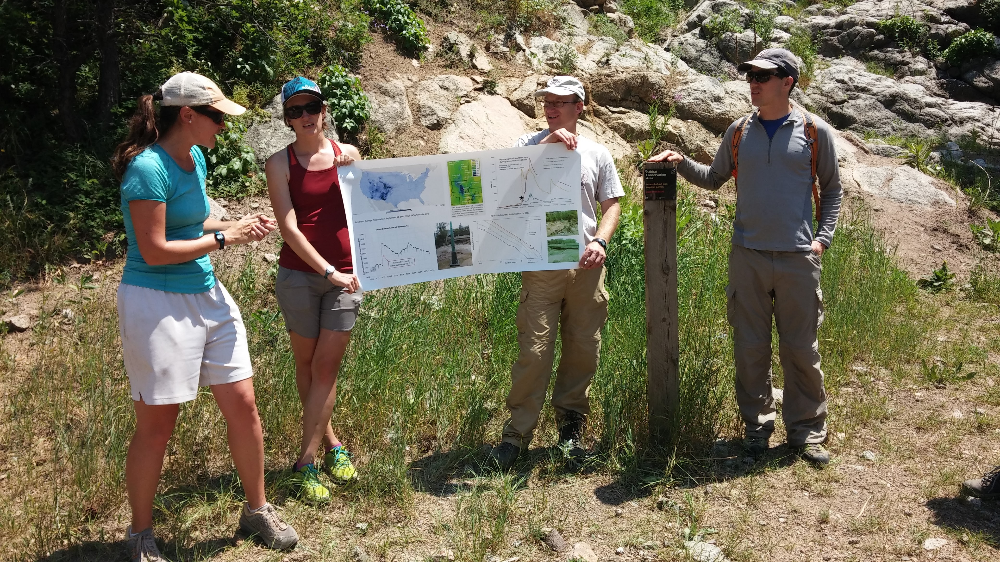
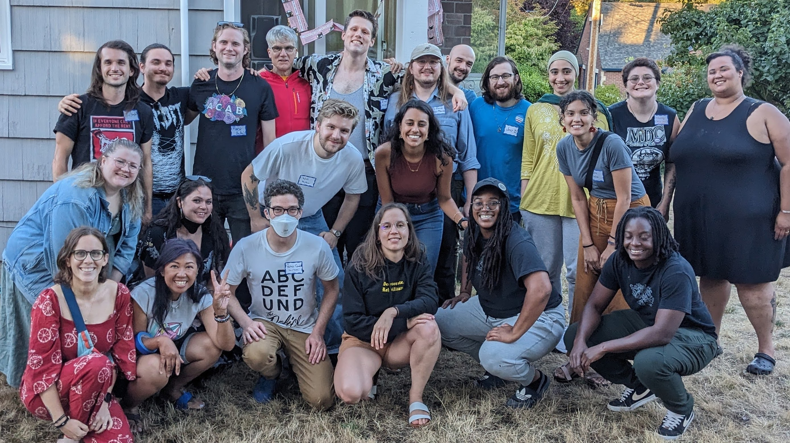
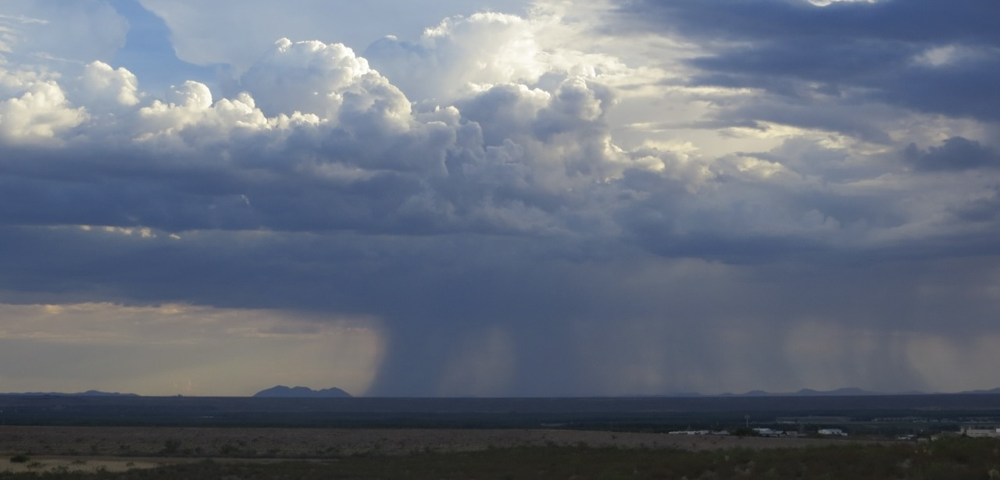
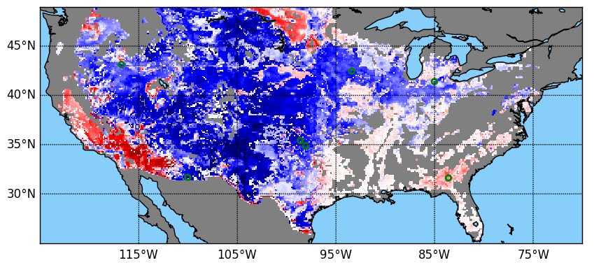

Peter Condit
Oxbow Science
About
Data visualization and interpretation
The Python package plotly makes it easy to interactively view data with three dimensions. Python source code is here.
Click to interact
Soil texture affects how much precipitation the ground will absorb and how quickly that water will be released into streams or for use by vegetation. The coarse designations shown here are a starting point, but they have drawbacks related to heterogeneity and scale. My dissertation used in situ and remotely-sensed observations to gain a more nuanced and accurate understanding of soil moisture dynamics. The work impacts weather forecasts, drought and flood assessments, and crop yield predictions. For more, see Numerical modeling of natural processes and Remote sensing & GIS on this page.
In situ and remotely-sensed (SMAP satellite) observations of soil moisture can quantify how quickly the ground dries out after rainfall, but my work using data from a dozen USDA watersheds show that these data sources disagree by a factor of two.
- The x-axis shows the number of days since rainfall stopped. The y-axis shows the change in volumetric soil moisture between each observation (negative values, as soil is drying out). Small blue markers are from in situ probes and small red markers are from a satellite. Large markers show the median of each observation type, binned by day. Green markers are in situ data thinned to the frequency of the satellite data.
- On average over the first 6 days, when a majority of the soil drying occurs, the (red) satellite data observe drying to occur twice as fast as the (blue) in situ data do. For details, see Shellito et al. (2016).
Writing and editing
My research has been peer-reviewed and published in academic journals. In turn, I have reviewed dozens of other folk's work. The references below and more are also shown on Google Scholar.
- Tangdamrongsub, N., Dong, J., and Shellito, P. J. (2022). Assessing Performances of Multivariate Data Assimilation Algorithms with SMOS, SMAP, and GRACE Observations for Improved Soil Moisture and Groundwater Analyses. Water, 14, 621, doi: 10.3390/w14040621
- Tangdamrongsub, N., Jasinski, M. F., and Shellito, P. J. (2021). Development and evaluation of 0.05° terrestrial water storage estimates using CABLE land surface model and assimilation of GRACE data. Hydrol. Earth Syst. Sci., 25, 4185–4208, doi: 10.5194/hess-2020-665
- Shellito, P. J., Kumar, S. V., Santanello, J. A., Lawston, P. M., Bolten, J. D., Cosh, M. H., Bosch, D. D., Holifield Collins, C. D., Livingston, S., Prueger, J., Seyfried, M., and J. P. Starks (2020). Assessing the impact of soil layer depth specification on the observability of modeled soil moisture and brightness temperature. J. Hydrometeorol., 21(9), 2041-2060, doi: 10.1175/JHM-D-19-0280.1
- Shellito, P. J., E. E. Small, and B. Livneh (2018), Controls on surface soil drying rates observed by SMAP and simulated by the Noah land surface model. Hydrol. Earth Syst. Sci., 22, 1649-1663, doi: 10.5194/hess-22-1649-2018.
- Shellito, P. J. et al. (2016), SMAP soil moisture drying more rapid than observed in situ following rainfall events. Geophys. Res. Lett., 43(15), 8068–8075, doi: 10.1002/2016GL069946.
- Shellito, P. J., E. E. Small, and M. H. Cosh (2016), Calibration of Noah Soil Hydraulic Property Parameters Using Surface Soil Moisture from SMOS and Basinwide In Situ Observations. J. Hydrometeorol., 17(8), 2275–2292, doi: 10.1175/JHM-D-15-0153.1.
Volunteer writing, editing, and publishing:
- I spent multiple years as a writing mentor for undergraduate participants in NSF's Research Experiences in Solid Earth Science for Students (RESESS). 
- Following the murder of George Floyd and others, I created an anti-racist newsletter called Seattle Abolition Support to highlight Seattle's progress in participatory research, participatory budgeting, and non-police approaches to public safety.
- I co-founded PB Creators, a research and creative team that advocates for participatory budgeting (PB) and community-led public safety using artwork, interactive web pages and Instagram series.
Numerical modeling of natural processes
This toy model I built uses an implicit solver to simulate thermal diffusion into and out of the land surface.
In situ and remotely-sensed soil moisture observations can capture the natural cycle of land surface wetting and drying. Highlighted in green below are multi-day drydown periods at locations in Oklahoma and California. Using a time series analysis of rainfall data, I identified over 100 drydowns at 17 well-instrumented sites in the U.S. and abroad. Small blue dots (appearing as squiggly lines) are in situ observations of volumetric soil moisture (VSM), and red exes are satellite-based observations of the same.
I fit an exponential decay model to each drydown to produce the curves below. The optimized decay timescale, τ, is robust to biases and isolates a key characteristic of the location and observation type. See Shellito et al. (2016) for further details of this work and figure.

Ensemble simulations and parameter calibration can improve model estimates of soil moisture. Below, I created over a dozen simulations of soil moisture (gray lines) with the Noah land surface model by perturbing some of its parameters. I then used a machine learning algorithm to create solutions that are calibrated to a few different observational datasets (blue, green, and red lines).
Here, the simulation that best fits in situ observations (blue squares) is the blue line. Ensemble simulations are useful for determining uncertainty, and their average can be more reliable than any individual model run. See Shellito et al. (2016b) for more.

Project management
Tye Reed ran for city council in Seattle district 5. I managed field efforts and successfully qualified the campaign for democracy vouchers.
Together with my dissertation committee and other colleagues, I designed and carried-out numerical experiments to better understand how precipitation moves through soil and vegetation. I have practice preparing proposals, giving presentations, and soliciting feedback from peers. These relationships and projects are documented in my publication record.
Seattle's city council resourced the Black Brilliance Research Project to use participatory research to develop non-police modes for public health and safety. I managed volunteers, conducted validation checks, and supported the implementation of participatory budgeting. These efforts are documented in the early issues of the SAS newsletter (issues 1, 2, 3, 4, and 5).
Volunteer artwork by Matt O.
Remote sensing and geographic analyses
NASA’s SMAP satellite mission measures soil moisture from space. The number of valid observations from three years of operation are shown in panel (a). After using rainfall data to identify drydown events (examples shown above), I used satellite data to calculate hundreds of soil drying rates at over 75,000 pixels (panel b). The mean drying rates from these satellite observations are shown in panel (c). Panel (d) shows the mean drying rates from the same time periods using model simulations. See Shellito et al. (2018) for further explanation and analysis.
![Four panels all based on the ouline of the continental US. The first and second (a and b)
have colors indicating counts of satellite observations and soil drying rates,
respectively. Most locations have about 300 satellite observations and 100
soil drying rates. The more forested parts of the country have no observations.
The third and fourth panels have colors indicating soil drying rates, in cubic centimters
per day. There are no data where there were no satellite observations. The two panels
are slightly different, as one is derived from satellite observations and the other is
derived from a model, but they show similar patterns. The fastest
drying rates are in the middle part of the country.](./assets/hessFig01.png)
This continent-wide analysis of monthly average potential evaporation rates and vegetation cover (defined by NDVI) shows heavy dependency on geography. Climates with large seasonal variations in vegetation cover (green subset) experience higher potential evaporation rates when leaves are out (in the summer) than when they have fallen (in the winter). Vegetation in arid regions (red subset) is low all year and does not correlate with potential evaporation. The impact of both regions is apparent in the combined data (blue circles with error bars). See Shellito et al. (2018) for further details.
![Two panels, one of which is an outline of the continental US, shaded to show mean
annual vegetation coverage. For the most part, the east part of the country
is more vegetated than the west. There are two insets, one near the great lakes (a humid region),
and one the the southwest (a dry region). The second panel is a plot with vegetation on the x-axis
and potential evaporation (PE) on the y-axis. Three sets of data are on the plot, one from the humid
region, one from the desert region, and one with error bars showing all data combined. The humid region
shows a strong positive correlation between PE and vegetation. The desert region shows wide variations of
PE but consistently low vegetation. The combined data show a muted impact of both regions.](./assets/hessFg08.png)
After doubling the vertical resolution of a land surface model and comparing it to remotely-sensed observations, I show improvement (blue) and degradation (red) of soil moisture simulations continent-wide. Thinner model layers can improve observability but lead to a dry bias in some regions. See Shellito et al. (2020) for scale and details.
Custom software for data engineering
Large amounts of modeled and remotely-sensed data are available from public repositories. I automated the retrieval process for SMAP, Noah, and NLDAS data, and the scripts are available for other researchers on Github.
Remotely-sensed data contain one file for every time step in a given domain. Many types of analyses require aggregating the data into a continuous time series, with one file for each pixel being analyzed. I created and shared a script that uses batched operations to convert thousands of 2-D files into tens of thousands of 1-D time series while avoiding memory limits.